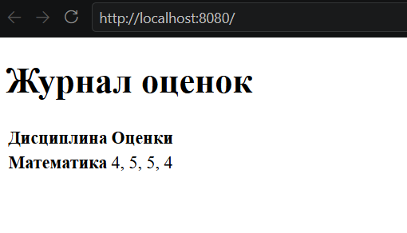

Практическое задание 5. Простой веб-сервер (GET/POST)
Задание
Написать простой веб-сервер для обработки GET и POST HTTP-запросов с помощью библиотеки socket в Python. Сервер должен:
- Принимать и записывать информацию о дисциплине и оценке по дисциплине.
- Отдавать информацию обо всех оценках по дисциплинам в виде HTML-страницы.
Выполнение
class MyHTTPServer:
def __init__(self, host, port, server_name):
self._host = host
self._port = port
self._server_name = server_name
self._grades = {}
В работе был использован базовый класс сервера MyHTTPServer. Оценки хранятся в словаре в парах дисциплина - список оценок.
def serve_forever(self):
serv_sock = socket.socket(
socket.AF_INET,
socket.SOCK_STREAM,
proto=0)
try:
serv_sock.bind((self._host, self._port))
serv_sock.listen()
while True:
conn, _ = serv_sock.accept()
with conn:
try:
self.serve_client(conn)
except Exception as e:
print('Client serving failed', e)
finally:
serv_sock.close()
Сервер запускается методом serve_forever, который создает сокет, принимает подключение и обрабатывает клиента.
def serve_client(self, conn):
rfile = conn.makefile('rb')
try:
try:
req = self.parse_request(rfile)
except ConnectionResetError:
return
except Exception as e:
self.send_error(conn, HTTPStatus.BAD_REQUEST, str(e))
return
try:
resp = self.handle_request(req)
except NotImplementedError:
self.send_error(conn, HTTPStatus.NOT_IMPLEMENTED, 'Request handler is not implemented')
except Exception as e:
self.send_error(conn, HTTPStatus.INTERNAL_SERVER_ERROR, str(e))
else:
self.send_response(conn, resp)
finally:
rfile.close()
Метод serve_client считывает данные и вызывает методы для обработки запроса, а затем закрывает соединение. Также он обрабатывает ошибки.
def parse_request(self, rfile):
raw = rfile.readline(MAX_LINE + 1)
if len(raw) > MAX_LINE:
raise Exception('Request line is too long')
req_line = str(raw, 'iso-8859-1')
req_line = req_line.rstrip('\r\n')
words = req_line.split()
if len(words) != 3:
raise Exception('Malformed request line')
method, target, ver = words
if ver != 'HTTP/1.1':
raise Exception('Unexpected HTTP version')
headers = self.parse_headers(rfile)
content_length = headers.get('Content-Length', '0')
body_length = int(content_length)
body = rfile.read(body_length)
if len(body) != body_length:
raise Exception('Incomplete request body')
return Request(method, target, ver, headers, body, rfile)
Метод parse_request достает из данных метод, цель и версию HTTP, вызывает метод для обработки заголовков и возвращает обработанный запрос в виде экземпляра класса Request.
class Request:
def __init__(self, method, target, version, headers, body, rfile):
self.method = method
self.target = target
self.version = version
self.headers = headers
self.body = body
self.rfile = rfile
@property
def path(self):
return self.url.path
@property
@lru_cache(maxsize=None)
def query(self):
return parse_qs(self.url.query)
@property
@lru_cache(maxsize=None)
def url(self):
return urlparse(self.target)
def parse_headers(self, rfile):
headers = []
while True:
line = rfile.readline(MAX_LINE + 1)
if len(line) > MAX_LINE:
raise Exception('Header line is too long')
if line in (b'\r\n', b'\n', b''):
break
headers.append(line)
if len(headers) > MAX_HEADERS:
raise Exception('Too many headers')
header_text = ''.join(line.decode('iso-8859-1') for line in headers)
return Parser().parsestr(header_text)
Метод parse_headers построчно считывает заголовки и использует парсер из библиотеки email.
def handle_request(self, request):
if request.path not in ('/', '/grades'):
return HTTPStatus.NOT_FOUND, {'Content-Type': 'text/plain; charset=utf-8'}, 'Not Found'
if request.method == 'GET':
return HTTPStatus.OK, {'Content-Type': 'text/html; charset=utf-8'}, self.render_grades()
if request.method == 'POST':
try:
form = parse_qs(request.body.decode('utf-8'), keep_blank_values=True)
except UnicodeDecodeError:
return HTTPStatus.BAD_REQUEST, {'Content-Type': 'text/plain; charset=utf-8'}, 'Form data must be UTF-8'
discipline = form.get('discipline', [''])[0].strip()
grade = form.get('grade', [''])[0].strip()
if not discipline or not grade:
return HTTPStatus.BAD_REQUEST, {'Content-Type': 'text/plain; charset=utf-8'}, 'Discipline and grade are required'
self._grades.setdefault(discipline, []).append(grade)
return HTTPStatus.SEE_OTHER, {'Location': '/'}, ''
Метод handle_request обрабатывает запрос и в зависимости от метода и пути запроса возвращает ответ в виде статуса запроса, типа контента и тела.
def render_grades(self):
if self._grades:
rows = ''.join(
'<tr><th>{}</th><td>{}</td></tr>'.format(
escape(discipline),
', '.join(escape(grade) for grade in grades),
)
for discipline, grades in self._grades.items()
)
else:
rows = '<tr><td colspan="2">Оценок пока нет</td></tr>'
return '''<!doctype html>
<html lang="ru">
<head><meta charset="utf-8"><title>Журнал оценок</title></head>
<body>
<h1>Журнал оценок</h1>
<table>
<thead><tr><th>Дисциплина</th><th>Оценки</th></tr></thead>
<tbody>{}</tbody>
</table>
</body>
</html>'''.format(rows)
Метод render_grades возвращает HTML-страницу с оценками по всем дисциплинам.
def send_response(self, conn, response):
status, headers, body = response
status = HTTPStatus(status)
if isinstance(body, str):
body = body.encode('utf-8')
elif not isinstance(body, bytes):
raise TypeError('Response body must be str or bytes')
response_headers = dict(headers)
response_headers.setdefault('Content-Length', str(len(body)))
response_headers.setdefault('Connection', 'close')
response_headers.setdefault('Server', self._server_name)
lines = [f'HTTP/1.1 {status.value} {status.phrase}\r\n']
lines.extend(f'{key}: {value}\r\n' for key, value in response_headers.items())
lines.append('\r\n')
conn.sendall(''.join(lines).encode('iso-8859-1') + body)
Метод send_response отправляет клиенту сформированный ответ на HTTP-запрос.
